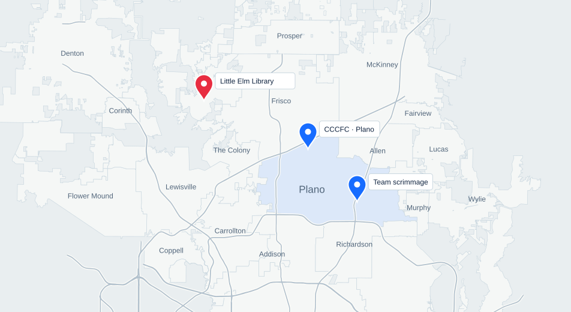
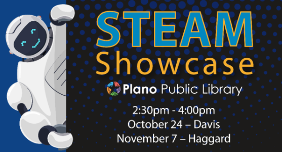

September 12, 2026
From Curiosity to Creation
Students and families built VEX creations, explored basic coding, and drove robots.
Robotex Ninjas began in 2023; Ninjas STEM Foundation was established in 2026. Explore the places where our students have shared robotics, built together, and helped others discover what they can create.

Students and families built VEX creations, explored basic coding, and drove robots.
Events move here after their scheduled date. A “recap pending” label means participation and outcomes have not yet been confirmed.

No upcoming events are currently listed. Explore our past programs →
Davis Library · Plano
2:30–4:00 PM · Children's Program Room
7501 Independence Parkway, Plano, TX 75025
Join Ninjas STEM Foundation at Davis Library's STEAM Showcase! Meet our students, see our robots, and explore how local teen robotics and science teams tackle engineering challenges. Families and visitors of all ages are welcome.
Event details ↗The scheduled event date has passed. The event report has not yet been added.
Haggard Library · Plano
2:30–4:00 PM
Come see the robots, talk with our students, and learn about our programs and mentorship opportunities.
Event details & registration ↗The scheduled event date has passed. The event report has not yet been added.
Explore the activities, student contributions, and recorded outcomes behind our community programs.
General volunteering by our students — valuable service, but not STEM teaching or demonstration.